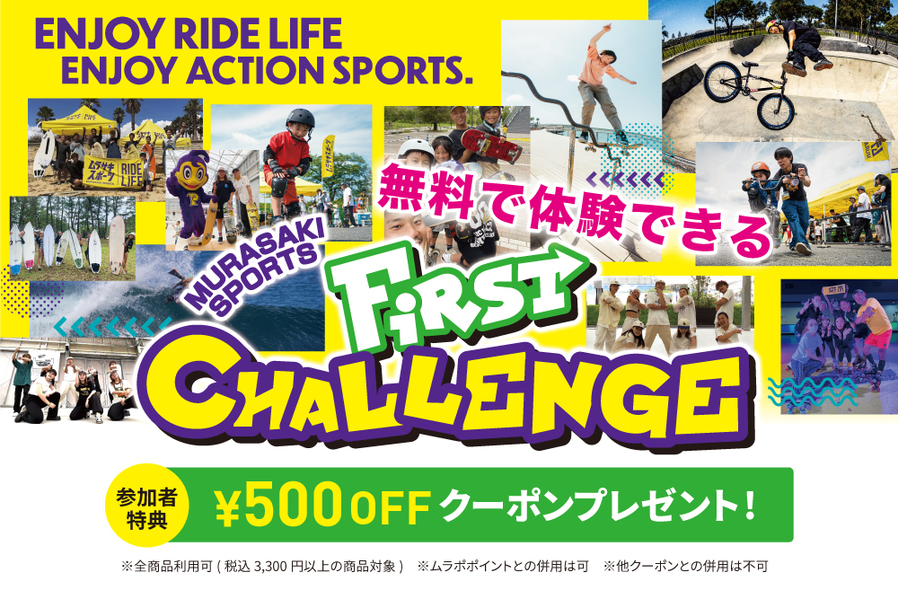
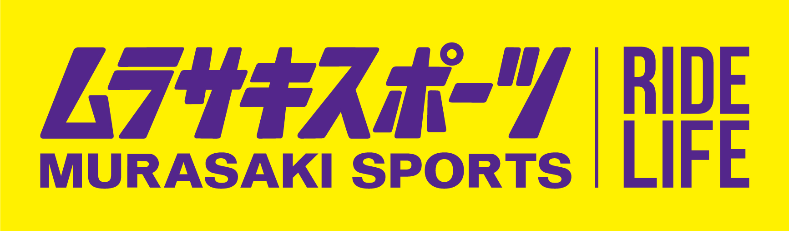

■高島平ランニングバイクPARK in 高島平団地 団地であそぼう！
ストリートスポーツに挑戦〜presented by 高島平カップ〜
前回好評をいただいたランニングバイクPARKの第3弾を開催いたします。
今回はランニングバイク企画に加えて、スケートボート体験ブースとヘッドスピンワールドギネスを持つ大野愛地さん率いるプロダンサーによるキッズ向けブレイキンワークショップ&ダンスパフォーマンスも登場!
全てのコンテンツの参加が無料※(キッチンカーを除く)ですので是非お越しください!
※保護者同伴の上で無記名アンケートにご協力いただける方
|
高島平ランニングバイクPARK in 高島平団地 団地であそぼう！ストリートスポーツに挑戦〜presented by 高島平カップ〜 |
|
| 開催日 | 2024年6月8日(土)10:00~16:00 ※雨天時は6月9日(日)に順延 ※延期の際は前日15時までに当HPニュース欄にて告知します |
|---|---|
| 開催場所 | 高島平団地33街区 おやまの広場南 (住所 東京都板橋区高島平2-33-7) |
| 時 間 | 10:00～16:00(予定) |
| 参加資格 | 保護者同伴の上で無記名アンケートにご協力いただける方 |
| 主 催 | UR都市機構 |
| 後 援 | 板橋区 |
| 企画・運営 | ギャラップ・URリンケージ |
| 協 力 | ムラサキスポーツ |
| 駐車場について | なし お車でお越しの場合は周辺の有料駐車場をご利用いただくか、周辺の公共交通機関をご利用いただきますようお願いします。 |
| アクセス | 都営地下鉄三田線「高島平駅」下車 徒歩5分 |
| イベントタイムテーブル | 10:00〜11:30 ランニングバイクフリー走行スタート |
アクティビティ紹介
■ブレイキン・ワークショップ ダンス
pets実施時間：①11:55〜12:15 ②14:25〜14:45
pets受付方法：事前受付 お申し込みはこちら(4月30日(月)より受付開始)
pets申 込：6月2日(日)締切(各回 定員になり次第受付終了)
pets対象年齢：2才〜小学３年生
pets参加資格：保護者同伴の上で無記名アンケートにご協力いただける方
pets参加費：無料
pets内 容：2024年のパリオリンピックの正式種目として最近注目されているブレイキン!
プロのブレイクダンサーからダンスを教えてもらって楽しく踊ろう! ダンス未経験でも大丈夫。
ワークショップ後半では、実際にステージの上で簡単なショーを行います。最後はみんなで一緒に踊ってカッコよく決めようぜ!

■フリー走行 ランニングバイク
pets実施時間：10:00〜16:00
pets受付方法：当日受付(本部テントで受付)
pets定 員：なし
pets対象年齢：2才〜6才(未就学児)
pets参加資格：保護者同伴の上で無記名アンケートにご協力いただける方
pets参加費：無料
pets内 容：ランニングバイクで本格的なコースを思いっきり走ろう!
レースに参加したことがないお子様大歓迎!
友達みんなで走るととても楽しいよ!
※ストライダーのレンタルあり
※レンタル数には限りがございます。混雑時にはお待ちいただく場合がございます
※ヘルメット着用が必須です
※11:30〜12:20 14:00〜14:45のフリー走行はできません

■スケートボード ファーストチャレンジ スケートボード
pets実施時間：10:00〜16:00
pets受付方法：当日受付(本部テントで受付後ムラサキスポーツブースで受付)
pets定 員：なし
pets対象年齢：3才〜小学3年生
pets参加資格：保護者同伴の上で無記名アンケートにご協力いただける方
pets参加費：無料
pets内 容：ムラサキスポーツが提案する、体験型イベント【スケートボード ファーストチャレンジ】 その名の通り、初めてスケートボードに【乗る、体験する】を 当日その場で、ムラサキスポーツアプリのご登録で無料体験できます!
体験会参加者の方には、ムラサキスポーツで使用できる 500円OFFのお得なクーポンもプレゼント!
※スケートボードのレンタルあり
※レンタル数には限りがございます。混雑時にはお待ちいただく場合がございます
※ヘルメット着用が必須です
※11:30〜12:20 14:00〜14:45のスケートボード ファーストチャレンジはできません


■講師情報
大野 愛地(おおの あいち)
京都府出身。1分間一度も手を使わず142回転するヘッドスピンの世界記録保持者。
グラミー賞にノミネートされたアメリカのアーティスト“LMFAO”の公式メンバーであり、2016年に米国テレビ芸術科学アカデミー主催の世界各国から大注目を受ける「エミー賞」にて Outstanding Choreography を見事受賞した“Quest Crew”の公式メンバーである。